第15天：简单常量传播之理论篇
第15天：简单常量传播之理论篇
上节课我们学习了流图，先复习一下关键知识点。
流图（Flow Graph）是编译原理中用于表示程序控制流的一种有向图，也称为控制流图（Control Flow Graph, CFG）。它将程序的基本块作为节点，控制流转移作为边，为程序分析和优化提供了重要的数据结构基础。
基于控制流图，我们可以分析程序内部数据是怎么流动的，进而优化代码。不过仅有流图还不够，还需要掌握数据流分析框架。
数据流分析框架
编译原理中的数据流分析框架是一个用于静态推导程序中数据如何随执行而流动的通用模型。它既是迭代求解算法的理论基础，也是众多全局优化（如死码删除、常量传播、活跃变量分析）的共同“骨架”。数据流分析的典型框架可抽象为四元组 (D, V, ∧, F)。
-
D（方向）
指定信息传播方向。- 正向（forward）：也叫前向，从程序入口开始，沿控制流前进，例如马上要讲的常量传播。
- 逆向（backward）：从程序出口反向传播，如后面要讲的“活跃变量”。
-
V （值集）
包含初值和数据流分析中使用的值。对于正向分析，初值为 Entry 块的 out 值和其他基本块的 out 值；对于逆向分析，初值为 Exit 块的 in 值和其他基本块的 in 值。Entry 块的 out 值或者 Exit 块的 in 值也叫做边界集合，其他基本块的 out 值或者 in 值也叫做初值集合。
-
交汇函数
对于正向数据流，在计算基本块的 in 值时，如果基本块有多个前驱，则需要提供一种计算方法将前驱的 out 合并；对于反向数据流，在计算基本块的 out 值时，如果基本块有多个后继，则需要提供一种计算方法将后继的 in 合并。
-
传递函数
对于正向数据流，需要提供一种计算方法将基本块的 in 值转化为基本块的 out 值；对于逆向数据流，需要提供一种计算方法将基本块的 out 值转化为基本块的 in 值。
以上文字可能太抽象了，让读者云里雾里。没有关系，后文会结合“常量传播”为读者讲明白到底什么是数据流分析框架，以及如何做数据流分析。
什么是常量传播
常量传播是一种在编译时（即程序运行前）进行的静态程序分析优化技术。其核心思想非常简单：如果一个变量在某个程序点拥有一个已知的常量值，那么就可以在后续的代码中，直接用这个常量值替换所有对该变量的引用。如此一来，就可以减少不必要的变量访问和运行时计算，并可能触发进一步的优化（如死代码消除）。
常量传播的基本目标是：
- 确定常量值： 在程序的每一个点上，分析并确定哪些变量具有恒定的值。
- 传播常量值： 将这些已确定的常量值尽可能远地向程序的后继部分传播。
请看下面的代码：
1 | |
第 3 行，我们可以确定 x 的值是 1；
第 4 行，把 x 的值 1 传播进来，可以确定 y 的值是 0；
x 的值 1 传播到第 5 行，if 条件为真，执行 x++； 之后 x 变成 2；
y 的值 0 传播到第 10 行，if 条件为假，执行 else 分支， y++； 之后 y 变成 1；
x 的值 2 和 y 的值 1 传播到第 15 行，表达式的值是 2；
以上是我们手动计算的过程，如果用代码实现这个过程呢？
请看下面的代码：
1 | |
在语句 L2 处，我们知道 x的值肯定是 10。因此，常量传播优化可以将 L2 直接替换为 y = 10 + 1，进而得出 y = 11。
然而，现实中的程序可能有分支和循环，使分析变得复杂。例如：
1 | |
第 6 行，x的值可能是 5 也可能是 10。所以x在此处不是常量。编译器必须能够保守地处理这种情况。
理论模型：格（Lattice）
为了可以正确处理这种“可能为常量”、“肯定是常量”或“肯定不是常量”的不确定性，常量传播算法基于格理论进行建模。
题外话，格理论最自然、最基础的归属是序理论，而序理论本身是集合论与离散数学的一部分。在这里，格被定义为一种特殊的偏序集（poset），其中任意两个元素都有最小上界（join）和最大下界（meet）。
关于格理论，可以先放在一边，只要知道对于常量传播来说，程序中的每一个变量，都可以映射到三种值中的一个。
常量传播格包含三种基本值：
- T（Top，顶）：表示“可能为常量”。这是初始状态，意味着尚未看到任何对该变量的赋值。后文用 undef 表示
- c（Constant，常量）：表示该变量具有一个确定的常量值。
- ⊥（Bottom，底）：表示“非常量”。该变量在不同执行路径上可能具有不同的值。后文用 NAC 表示
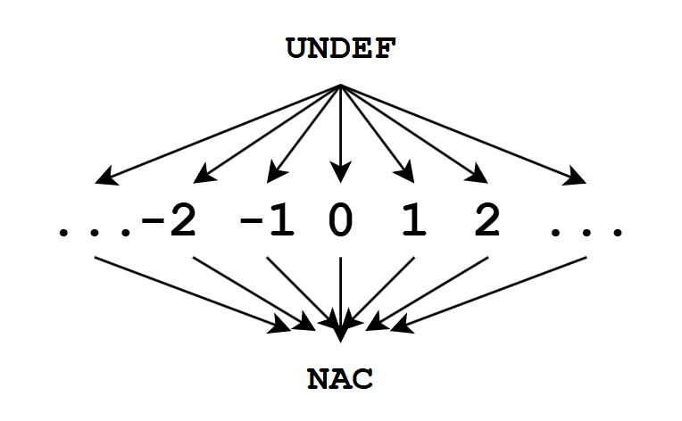
上图是常量传播格的哈斯图。
哈斯图（Hasse diagram）是偏序集（Partially Ordered Set, 简称 poset）的一种简洁、直观的图形表示方法，由德国数学家 Helmut Hasse 在20世纪推广而得名。
从哈斯图可以直观看到这三种值的层次关系：最上面是 UNDEF，表示不确定性最大；中间是所有的整数，因为它们之间不可比较，所以没有连线；最下面是 NAC，表示已确定无法优化。
举例分析
接下来，我们结合数据流分析框架和常量传播格，手动分析一下常量是如何传播的。
首先，我们把代码转换成数据流图，这一步骤我们的编译器就能完成。下图是我根据编译器的输出结果绘制的流图。
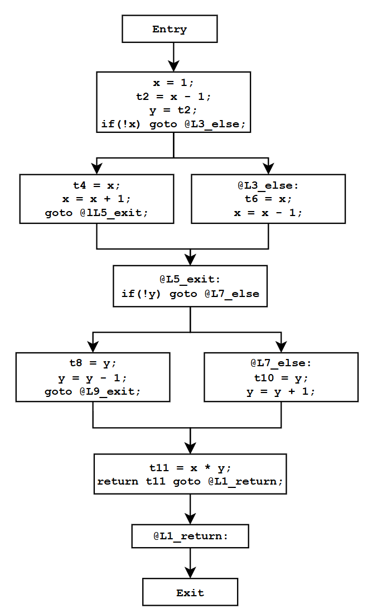
前文说了，数据流分析框架可抽象为四元组 (D, V, ∧, F)，分别是方向、值集、交汇函数和传递函数。
先说方向，对于常量传播分析，方向是正向（也叫前向），即按照代码执行的顺序来分析。
再看值集，我们要研究的是变量在程序的某点有没有确定的常量值，那么首先要统计都有哪些变量。
代码中没有全局变量，此函数也没有参数，仅有局部变量。为了简化分析，如果是非基本类型，初始值为 NAC；如果是基本类型且带初始化的，初值就为初始化值。因为代码仅对 x 做的初始化，所以变量的初始值如下表。
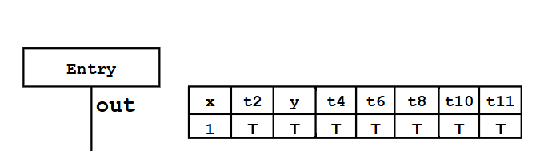
因为是正向传播，所以从 Entry 的 out 开始，out 的初始值就是上面的表格。
此 out 集合会传播给下一个基本块，成为下一个基本块的 in。
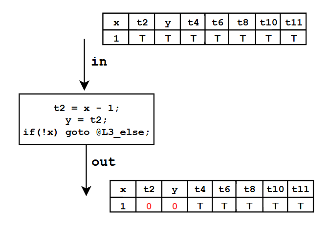
此基本块有 3 条指令，这些指令对值有什么影响呢？这就要用到传递函数了。
前文说了，对于正向数据流，需要提供一种计算方法将基本块的 in 值转化为基本块的 out 值，这种方法就在传递函数中。
常量传播的传递函数（或者说传递规则）如下：
1、如果指令不是赋值语句，例如是标号，跳转等，这时候变量的值不变
2、如果是赋值语句，形如 z = x ⊕ y
则采取下面的规则

（1）如果 y 和 z 都能映射到常量，则结果就是两个常量计算后的值
（2）如果 y 和 z 有任何一个映射到了 NAC，那结果就是 NAC
（3）如果不是上面的情况，则结果是 undef
规则清楚了，我们可以手动计算。
经过指令 t2 = x - 1；t2 的值变成 0；
经过指令 y = t2; y 的值变成 0；
接下来继续传播，分别传给左边和右边的基本块。
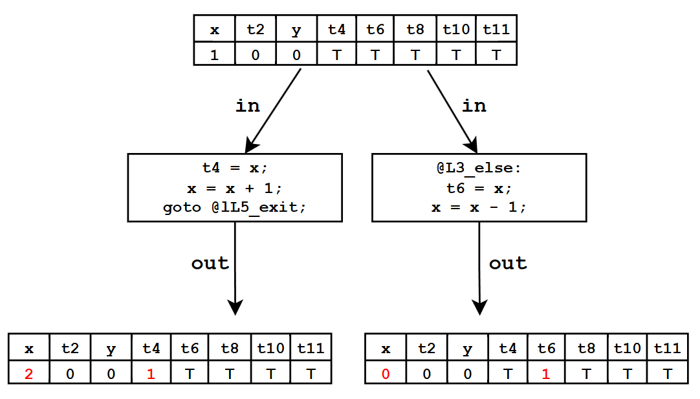
左边，经过 t4 = x;t4 变成 1；经过 x = x + 1; x 变成 2；
右边，经过 t6 = x; t6 变成 1；经过 x = x - 1; x 变成 0；
继续往下，似乎遇到了麻烦。
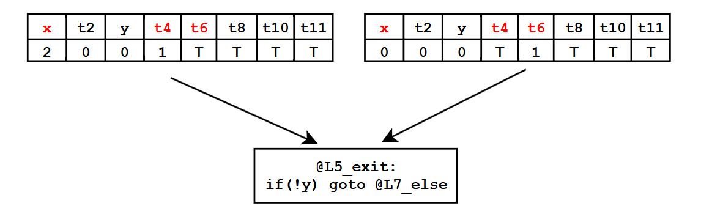
此基本块的输入有 2 个，也就是说它有 2 个前驱。
标记为红色的变量似乎有点麻烦，对于 x，左边的输入是 2，右边的输入是 0；对于 t4,左边的输入是 1，右边的输入是 undef,
对于 t6, 左边的输入是 undef，右边的输入是 1；
也就是说左边右边的值不一样，该怎么处理？
这时候，就需要用到交汇函数，需要提供一种计算方式将前驱的 out 值合并。
常量传播的交汇函数是（其实就是在哈斯图中找两个元素的最大下界）：
- x ⊓ ⊤ = x（任何值与 Top 合并保持不变）
- x ⊓ ⊥ = ⊥（任何值与 Bottom 合并结果为 Bottom）
- c1 ⊓ c1 = c1（相同常量合并仍为该常量）
- c2 ⊓ c2 = ⊥（不同常量合并结果为 Bottom）
所以， 合并后 x 的值为 NAC， t4 和 t6 的值都为 1；
合并后经过上面的基本块传播，值不会改变，因为标号和条件跳转指令不会改变任何一个变量的值（常量传播的传递函数的规则 1）。
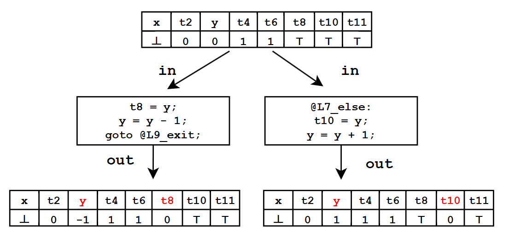
继续传播，经过上图左右两个基本块，变量值的变化已经用红色标出。
接下来又遇到了交汇。根据常量传播的交汇函数，左边和右边的交汇结果是：
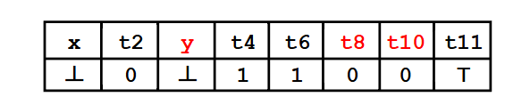
然后，再继续传播
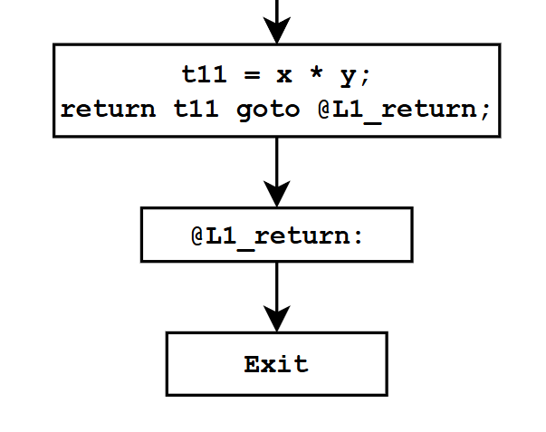
直到传播到 Exit 的 out,这就是一轮迭代。
讲到这里，相信读者对数据流分析框架的四个要素：方向、值集、交汇函数和传递函数有了基本的了解。
这个例子先分析到这里，下面我们要介绍另外一个概念：不动点。
不动点
刚才的例子，我们勉强算是做了一轮迭代（因为偷懒，后面三个基本块没有走完）。
在若干轮迭代后，每个基本块的 IN 值和 OUT 值都不再改变，说明到达了不动点。
为什么要追求不动点呢？不动点是数据流方程组“全部同时成立”的唯一可计算、可判定、且保证安全的最小解；不达到它，分析结果就必然缺失某些路径信息，从而可能让后续优化产生错误的代码。
请看下面的代码：
1 | |
此函数的流图和第一轮迭代的结果如下图：
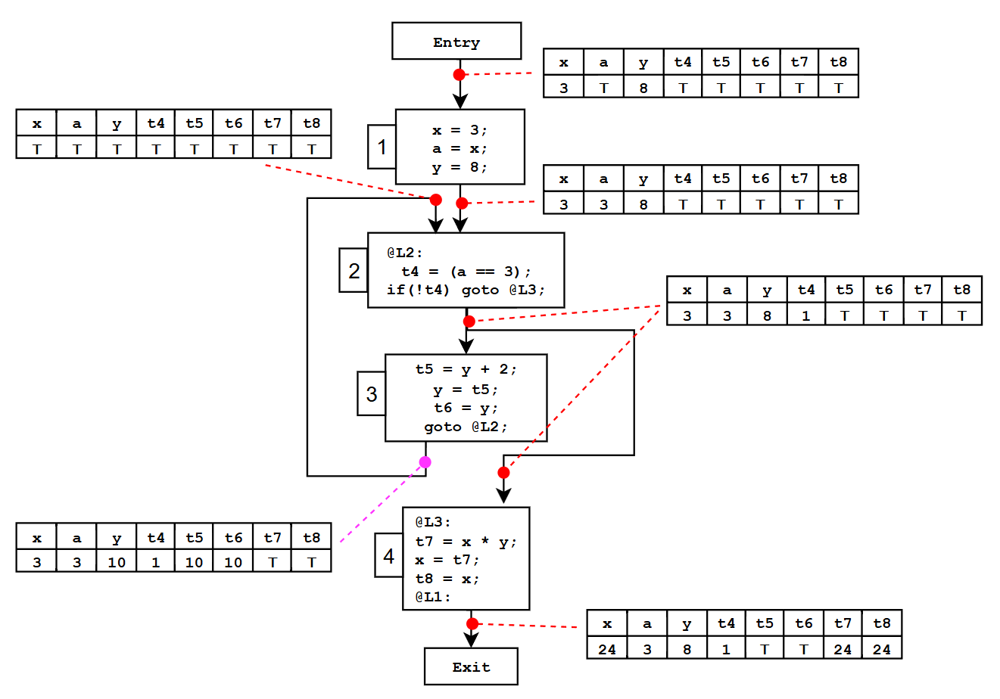
从Entry 的 out 开始看，因为变量 x 和 y 被常量初始化，所以开始的时候，它们俩的值是 3 和 8，其他的变量值为 undef;
经过 block-1, a 的值变成 3;
现在我们看 block-2 的输入，注意，它有 2 个输入，因为它的前驱是 1 和 3，1 对 2 的输入已经求出来了；但是 3 对 2 的输入是多少？
这就牵扯到数据流分析框架的初值，在常量传播这个场景下，每个 block(入口 Entry 除外)的 out 值为 undef,我已经在图中标明了(左边第一个表格)。
因为 block-2 有 2 个前驱，需要先把这两个前驱的 out 合并起来，也就是前文说的交汇函数，任何值与 undef 合并保持不变，所以它们合并的结果是右边从上往下数第 2 张表格。
然后，把这个结果向 block-2 传递，得到了右边第 3 张表格。
因为 block-2 有 2 个后继，分别是 3 和 4，所以 2 的输出要传递给 3 和 4；
先看 4， 2 的输出经过 4，得到了右边第 4 张表格；
再看 3，2 的输出经过 3，得到的是左边第 2 张表格，我用粉色标注的。
到了这里，我们发现 3 的输出会变成 2 的输入，也就是说第一次迭代后，2 的输入不再是全 undef，而是粉色虚线指示的那张表格。看来没有到达不动点，需要继续迭代。
下图就是第二次迭代，我把上图 3 的输出移动到下图 2 的输入（左边），右边第 1 第 2 张表没有变化。
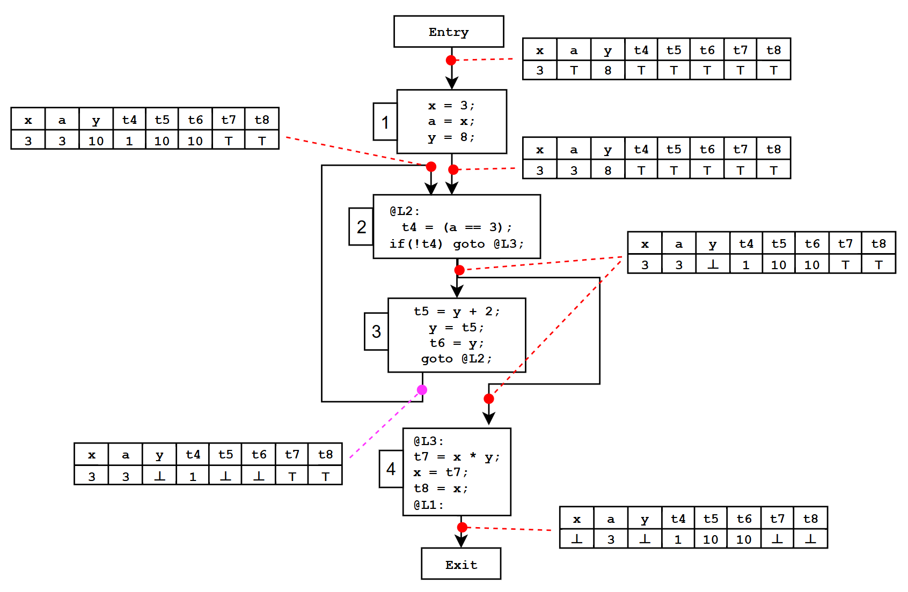
我们要再次求解 2 的输入，也就是合并 2 个 out，合并的结果在数值上等同第 3 张表，合并结果经过 block-2 后，每个变量的值都没有变，结果是右边第 3 张表；
然后我们需要求解 3 和 4 的输出；4 的输出结果是右边第 4 张表；3 的输出结果是左边粉色虚线指示的表格。
对比 3 的输出和 2 的输入（左边两个表格），还是不一样，说明还是没有到达不动点，所以继续迭代。
下图就是第三次迭代，我把上图 3 的输出移动到下图 2 的输入（左边），右边第 1 第 2 张表没有变化。
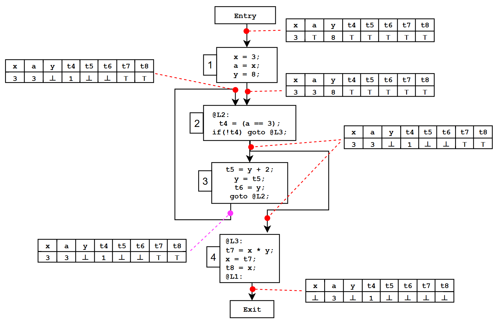
我们要再次求解 2 的输入，也就是合并 2 个 out，合并的结果在数值上等同第 3 张表，合并结果经过 block-2 后，每个变量的值都没有变，结果是右边第 3 张表；
然后我们需要求解 3 和 4 的输出；4 的输出结果是右边第 4 张表；3 的输出结果是左边粉色虚线指示的表格。
对比 3 的输出和 2 的输入，完全一样，说明到达不动点了。迭代可以结束了。
肯定有读者问，到达不动点了，然后呢？
优化方法
请看下面的代码。
1 | |
首先，画出此函数的流图
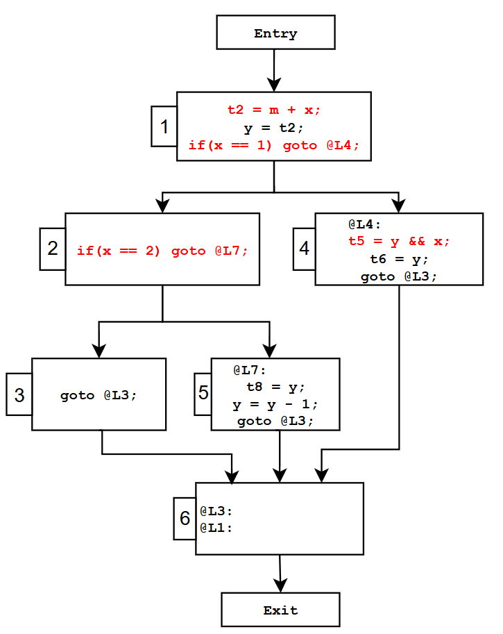
因为这个流图没有环路，所以经过一轮迭代后就能到不动点。到达不动点后，每个基本块的 in 和 out 不再改变，这是宏观上的不变。
如果再往细看，因为值集在基本块内部是逐指令传递的，所以每条指令的 in 和 out 不再改变。
我们把每个基本块的每条指令拿出来，根据指令的 in 和 out，就可以做优化了。
例如基本块 1，一共有 3 条指令，到达不动点后，三条指令的 in 和 out 如下：
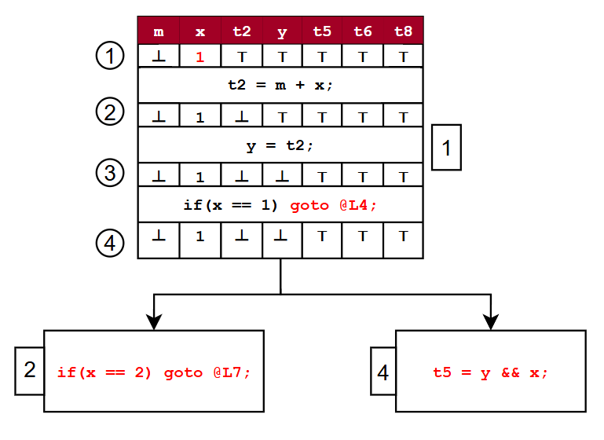
红色背景这行，我标注了每个变量的名字。
① 这行是 t2 = m + x 这条指令的 in
② 这行是它的 out，同时是指令 y = t2 的 in
③ 这行是指令 y = t2 的 out，同时是指令 if(x == 1) goto @L4 的 in
④ 这行是指令 if(x == 1) goto @L4 的 out
对于第一条指令 t2 = m + x ；
因为 x 的 in 是 1，所以这个指令可以优化为 t2 = m + 1；
对于第二条指令 y = t2；
不管是从 in 还是从 out 来看，t2 和 y 都不是常量，没有优化的余地。
对于第三条指令 if(x == 1) goto @L4;
因为 x 的值是 1，所以 x == 1 成立，所以一定执行 goto @L4;这样看来基本块 2 都是多余的。
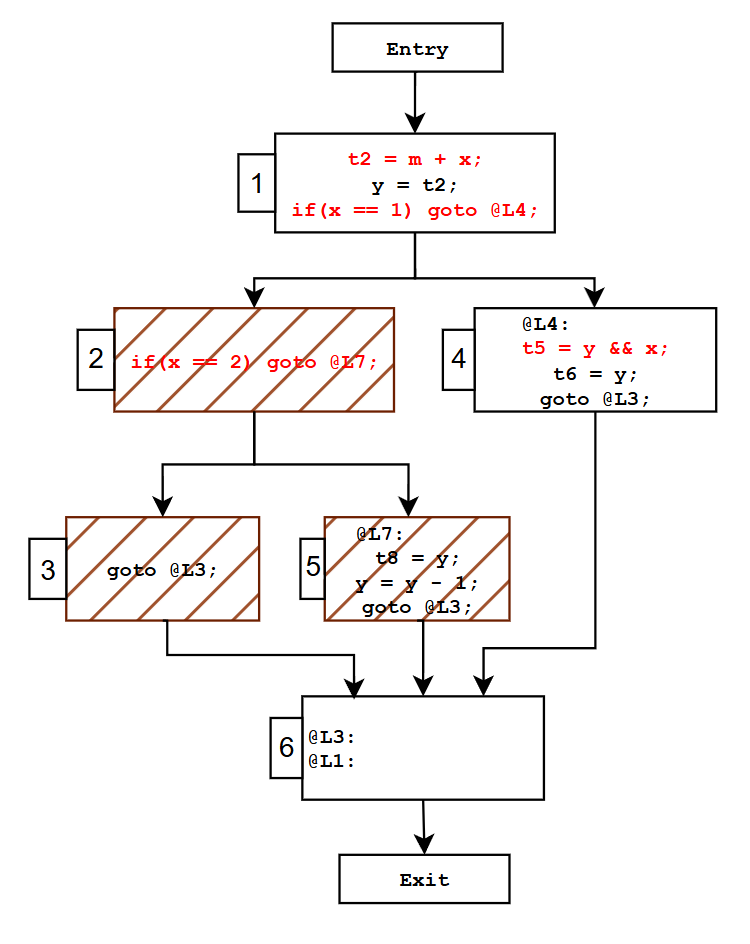
既然基本块 2 是多余的，那就可以删除它；其实基本块 3 和 5 也是多余的，因为 3 和 5 都是作为 2 的后继存在，2 都不存在了，他俩也是不可达的，可以删除。
还有，基本块 4 的指令 t5 = y && x; 还可以优化，因为 x 的值是 1，所以 t5 的结果就看 y 是否为 0，当 y !=0 成立,t5 的值是 1；当 y == 0 成立, t5 的值是 0；所以指令 t5 = y && x 可以替换为 t5 = （y != 0）；
所以，对于常量传播分析，首先建立数据流分析框架，然后确定边界值和初始值，经过若干此迭代，会到达不动点。这时候我们考察每条指令的 in 和 out，看看有没有优化的空间，如果某个变量的 out 是常量，则用 result = c 代替这条指令。
如果 out 不是常量，就看指令的操作数在 in 集合的值，如果是常量就可以把这个操作数替换为常量。
另外，还可以做代数化简，例如上面的指令 t5 = y && x 可以替换为 t5 = （y != 0）；
最后，对于条件跳转，如果确定条件肯定为真或者假，就可以把不可达的 block 删掉。
本节开始的代码经过常量传播及相关优化后，确实变简洁了，对比图如下：
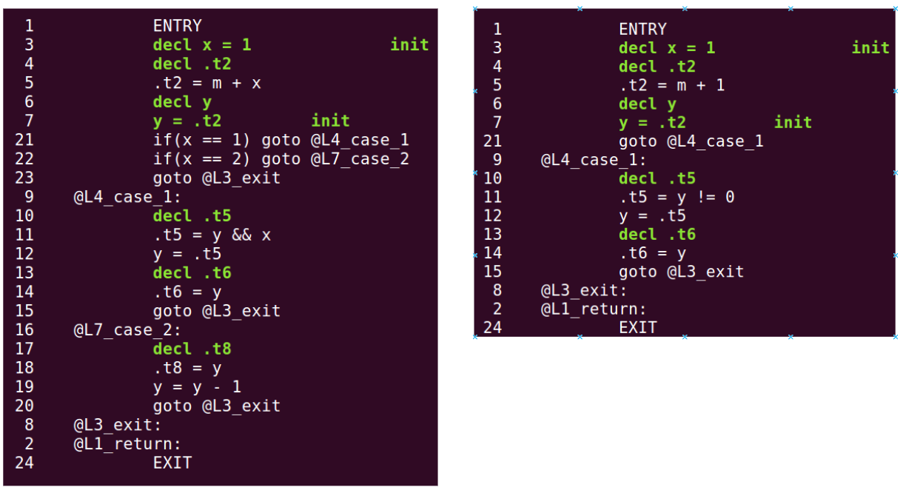
本节的内容到这里就结束了，我们学习了数据流分析框架、不动点等必须要掌握的概念，下节我们用代码实现常量传播优化。